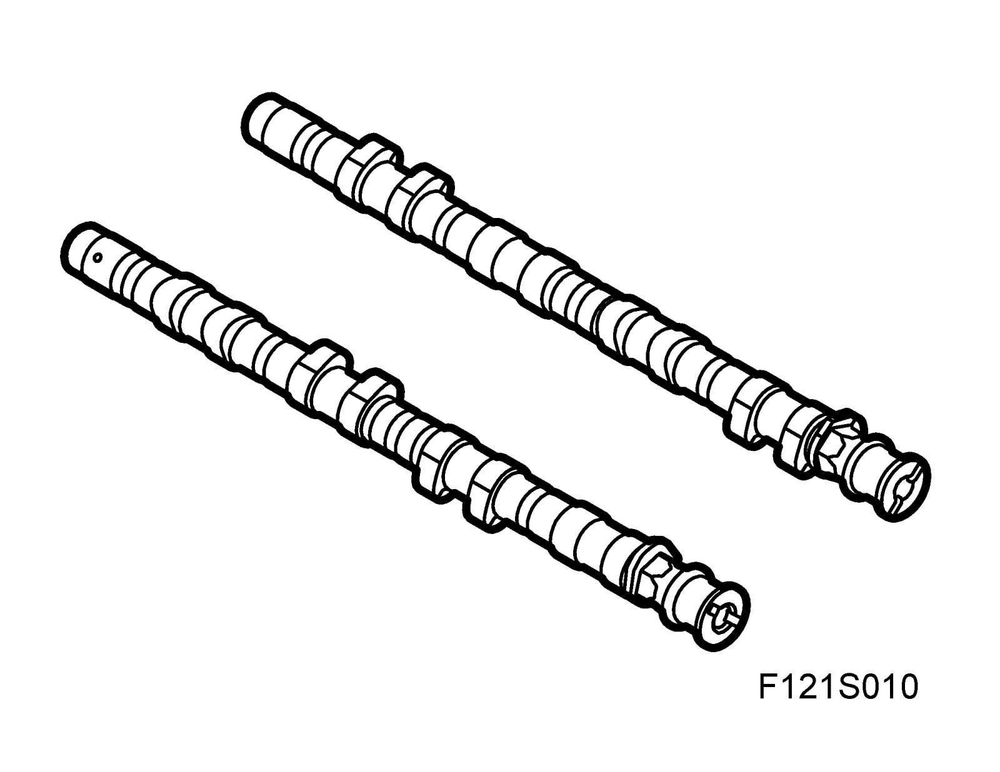
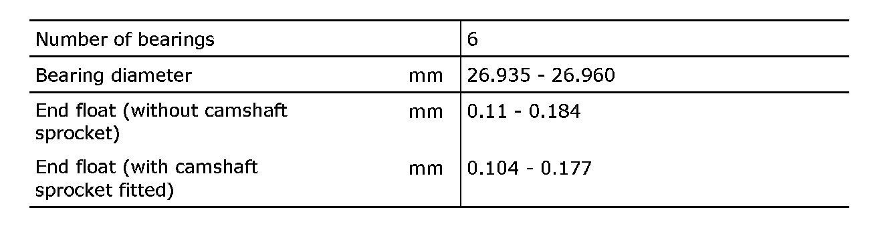
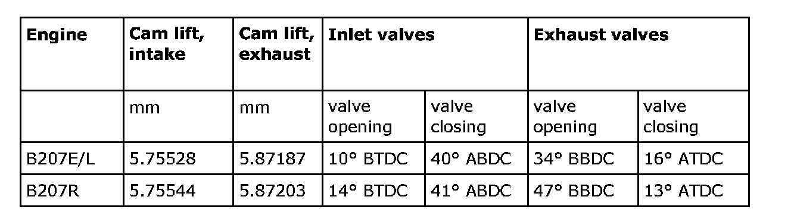

Camshaft: Specifications
Camshafts
General Data

Cam lift
Valve timing

B207E/L: Total valve opening duration intake and exhaust: 230°
B207R: Total valve opening duration intake: 235°, exhaust: 240°


